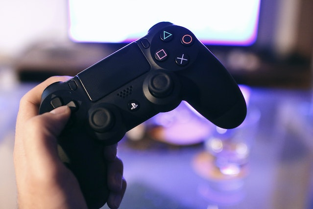
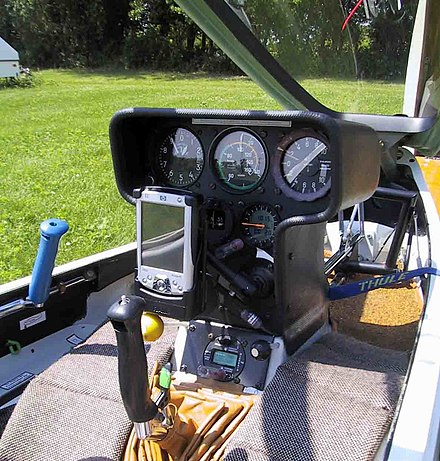

Introducción

El dispositivo hardware Joystick ha sido uno invento desde que se utilizo en 1908 para poder manejar los alerones y el timón de profundidad, y se sabe que se usaron en el avión Blériot VIII de Louis Bleriot en 1908, junto con una barra de timón accionada por pedal para la superficie de control de guiñada en la cola.
El origen del "joystick" no es del todo claro.
Se supone que fue usado por el piloto francés Robert Esnault-Pelterie a principios del siglo XX.
Otras fuentes afirman que fueron algunos de sus compañeros pilotos: Robert Loraine, James Henry Joyce y A. E. George.
Loraine es citado por el Oxford English Dictionary por usar el término "joystick" en su diario en 1909 cuando fue a Pau para aprender a volar en la escuela de Bleriot.
George fue un aviador pionero que, junto a su colega Jobling, construyó y voló un biplano hacia Newcastle, Inglaterra en 1910.
Supuestamente inventó el "Palo de George" (George Stick), que se hizo más popularmente conocido como el joystick.
La columna de control de la aeronave diseñada por George y Jobling está en la colección del Discovery Museum en Newcastle upon Tyne, Inglaterra.
Pero desde entonces ha tenido numerosos usos, y muchos de ellos que a dia de hoy se siguen aplicando y otros que hasta hace 5 años se continuaban desarrollando, por ello ahora pasaremos a conocer sobre este tipo de hardware.
Características
Es un dispositivo que se adapta al manejo con una mano, integra botones básicos para controlar los videojuegos, y dependiendo del modelo también puede tener opcional mente una serie de botones extras en la palanca. El tamaño de la palanca es grande, ya que se toma con toda la mano, a diferencia de los gamepad que se utilizan ambas manos para controlarlo Ha competido en el mercado directamente contra otros dispositivos como el gamepad y contra los racewheel o volantes para juegos. Ha habido 2 tipos de palanca en el joystick;los digitales y los análogos .
Beneficios y usos

Estos diferentes tipos de pueden aplicar en diferentes sectores, como es el caso mas cercano a la tecnología, en las consolas para jugar a videojuegos, el caso de la PlayStation es uno de los mas famosos ya que para poder jugar a la PlayStation 4 se requiere de un mando, el cual posee dos joysticks que permiten la navegación por la consola, al igual que sucede en los videojuegos que permiten poder jugar correctamente, ya que sin este hardware se haría casi imposible jugar a determinados juegos como puede ser conducir en juegos de carreras, u otro tipo de carreras o juegos que se utilizan diferente vehículos.
Por ejemplo, jugar al Formula 1 en la PS4 seria muy difícil debido a que al correr en los circuitos de F1 se necesita mucha precisión a la hora de trazar curvas, u otras acciones por lo que esto seria casi imposible únicamente con botones.
Ademas de ser necesario para en el mundo virtual también se necesita en el mundo real como por ejemplo para pilotar un helicóptero u avión que en la gran mayoría de los casos llevan un joystick que les permite poder manejar las aeronaves con mayor facilidad y precisión, como se puede notar en la primera vez que se desarrollo fue para poder pilotar un avión.
Siguiendo el tema del transporte, en este caso terrestre y acuático, se puede observar la implementación
de este tipo de hardware en grúas o camiones empleados para la construcción, de forma que aporta una gran ayuda para poder realizar tareas que requieren transportar grandes pesos de un punto de la obra a otra sin tener que ejercer esfuerzo alguno, también se encuentran en los vehículos acuáticos no tripulados, es decir, cuando por ejemplo por alguna razón se debe bajar hasta el fondo del mar, donde se encuentra a gran profundidad y por ello hay mucha presión, se utilizar una especie de submarino no tripulado que, sin embargo, se controla desde la superficie y el manejo de este se realiza con un joystick, otro uso que permite el movimiento sin tener que estar cerca o hacer esfuerzo alguno son, las cámaras de seguridad que dependiendo el tipo algunas de ellas se puede orientar con un joystick para vigilar dependiendo el momento un lugar u otro.
La aplicación de este hardware en sillas motorizadas para personas que requieran una de ellas para poder desplazarse, ha sido un gran desarrollo debido a la gran ayuda que se les ofrece para poder moverse solos sin necesidad de que sean empujados por otra persona, como sucede con las sillas de ruedas que o bien te llevan empujando por la parte de detrás de la silla, o giras las ruedas con tus propias manos, cosa que no sucede al tener un joystick que nos permite poder elegir la velocidad y dirección dependiendo la inclinación y orientación respectivamente.
Conclusión
La implementación de los joystick ha sido una gran manera de facilitar numerosas acciones que nos podrían llevar muchísimo mas tiempo pero, sin embargo, con una programación de un hardware para poder darle dirección y un sentido nos ayuda a grandes tareas, por ello esto se seguirá desarrollando en mas sectores sobre todo en la tecnología debido a la facilidad que aporta para poder navegar entre los diferentes menús y sitios virtuales, y del automovilismo ya que el desarrollo de los coches avanza muy rápido y seguramente en un futuro habrá coches que con un simple joystick podamos conducir en incluso tener otras consecuencias que aun están por descubrir ademas de poder manejar vehículos y aparatos sin necesidad de montarse como los drones o planeadores.